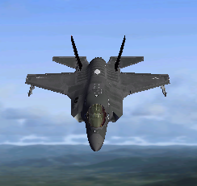

Lockheed Martin F-35B Lightning II

The Lockheed Martin F-35 Lightning II is a fifth-generation,
single-seat, single-engine, stealth-capable military strike
fighter, a multirole aircraft that can perform close air
support, tactical bombing, and air defense missions.
The F-35 has three different models; one is the conventional
takeoff and landing variant, the second is short takeoff
and vertical-landing variant, and the third is a
carrier-based variant.The F-35 is descended from the
X-35, the product of the Joint Strike Fighter (JSF) program.
Its development is being principally funded by
the United States, with the United Kingdom and other
partner governments providing additional funding. It is
being designed and built by an aerospace industry team
led by Lockheed Martin with Northrop Grumman and BAE
Systems as major partners.[7] Demonstrator aircraft flew
in 2000, with the first flight on 15 December 2006.
More info
-Maximum Speed
-Empty Weight
-Maximum Gross Weight
-Takeoff Gross Weight
-Length
-Wing Span
-Height
-Seating
1.67 Mach
29,300 lb
70,000 lb
44,100 lb
56 ft
35.0 ft
14.2 ft
1
2,065 km/h
13,300 kg
31,800 kg
20,100 kg
17 m
10.7 m
10.33 m
1